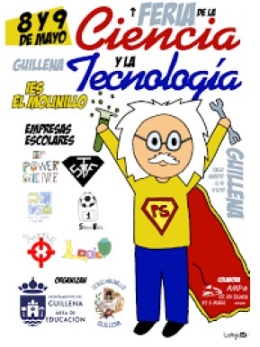

Semana de la Ciencia
Como todos los años a principios del mes de Mayo se celebra en la comunidad Educativa la Semana de la Ciencia.
Es constumbre en todos los Centros Educativos la preparación de actividades, conferencias y talleres por parte de los distintos Departamentos Implicados.
El Departamento de Tecnología e Informática entre otras muchas actividades Celebrará un concurso de Videojuegos en el que se expondrán las mejores creaciones que han realizado los alumnos/as y se votará el que consideren mejor.
A modo de ejemplo podéis ver la web de la semana de la ciencia que se creó para el Curso 21/22
VER WEB DE LA SEMANA DE LA CIENCIA I.E.S. TOLOSA CURSO 21/22